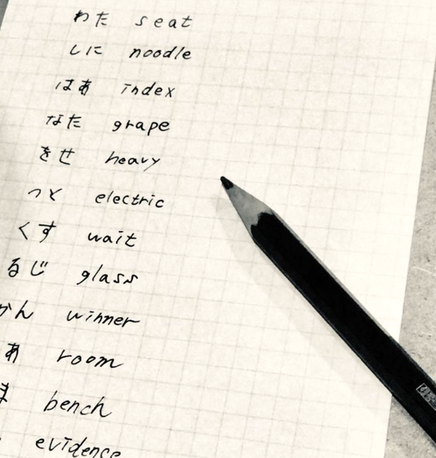
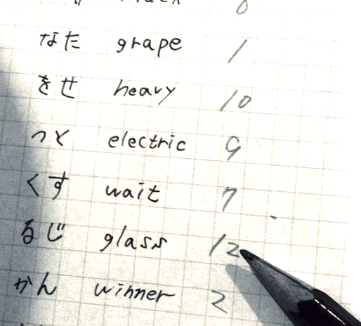
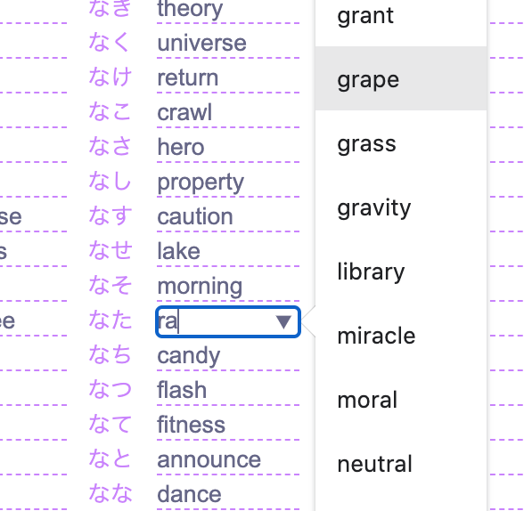
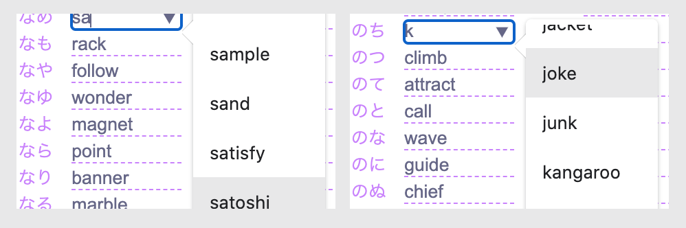
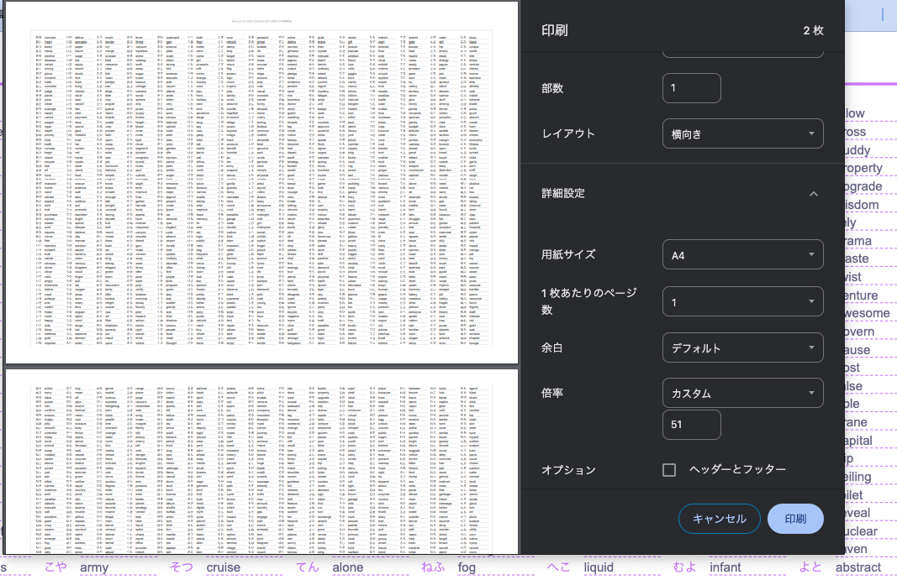

BrainWallet （ブレインウォレット） とは、ビットコイン等の暗号通貨の 秘密鍵やニーモニック・ワードを 脳内に記憶する為の方法の一つです。
しかし、これには脆弱性があります。私たち人間はパスフレーズに何を使うか予測可能であり、辞書攻撃等によるハッキング技術は日々向上しています。パスワードの大規模なデータベースがいくつか流出しているので、これらをすべてハッシュ化し対応するアドレスに残高があるかどうかを確認することは非常に簡単です。同じ理由で、日本語のBIP39ワードリストから意味のある文章を作ったり brain2bipなどの平文からBIP39ニーモニックを導き出すツールも推奨されません。
簡単に言えば、このツールの目的は 「冗長化と記憶支援」です。鍵となる 合言葉（24または48文字のひらがな平文）から独自の 暗号表を作成し、辞書攻撃からあなたの大事なビットコインを守ります。また、ニーモニックをメモした 物理的財布を紛失することを強く防ぎます。自分専用の暗号表と合言葉を作成したら、それを無くさないよう大事に保管してください。
1) 最初に 紙と鉛筆を用意して下さい。 決してPCやスマホは使わないで下さい。監視カメラにも気をつけて。24文字の合言葉を作る場合（12フレーズ）例えば「私にはあなたを説得する時間はありません」という文章を合言葉にするなら、それをひらがなにして２文字ずつに分けます。
わた しに はあ* なた をせ つと
くす るじ かん はあ* りま せん
もし重複しているペアがあったら、合言葉を考え直します。
わた しに はあ なた をせ つと
くす るじ かん があ りま せん
2) 合言葉の隣に、あなたが持っているBIP39ニーモニックを上から順に書き込んで下さい。
デフォルトでは濁音や小文字は清音に読み替えています。 【（ るじ → るし ）、（ があ → かあ ）など。】 くれぐれも二つの文字が混在しないように注意して下さい。（「しよ」と「しょ」など） ※濁音等のカスタム文字を追加することもできますが、表が膨大になるため推奨しません。
3) 次に、暗号表に打ち込む順番を決めます。キーロガー等のマルウェアからニーモニック を守る為に、順番はランダムかつダミーとなるワードを間に挟んで入力する必要があります。以下のように隣に適当な順番で12までの数字を書きましょう。これで暗号表を作る準備が整いました。

4) このツールをシークレットモードで開き、書いた数字の順番にワードを入力していきます。この例ではまず最初に「なた」の箇所に"grape"を打ちこめば良いことがわかります。以下のような感じで、

単語の途中の文字を入れても自動的にサジェストされます。間にダミーを2〜5つほど変則的に加えながら、3)で書いた数字の順に入力して下さい。 キーボードは極力使わずに、候補から選択します。ダミーを入力する箇所はなるべく広い範囲に、ワードは無作為に抽出します。

5) 12単語すべて入力し終わったら、上のボタンからPDFに出力して保存します
(リロードするとデータが消えてしまうので気をつけて下さい)。印刷の向きや倍率を変えることで列の数を整えることができます。可読性に気をつけて大きさを調整して下さい。
※A4横向き51％が推奨です※PDFデータは単体ではなく、JPEG等の画像にも書き出して保存しておくことをお勧めします。(プリント画面からテキストをコピーできるようになっており、スペース区切りでスプレッドシートに読み込むことも可能です、が・・・推奨はしません)

※セキュリティアップデート：重複単語が入れ替わるようになりました！例えばappleと入力された場所にbookと入力した場合、どこかに必ずある「元からbookと入力されていた場所」の文字が自動的にapple、つまり上書きされた文字と入れ替わります。（この変更によりワードは2048種類必ず存在するため、セキュリティはより強固となり安心してお使いいただけるようになります。
6) 暗号表ができたら、それが読めるかどうかテストしてみましょう。まず 合言葉を思い出します（これを忘れたら完全にアウト！あなたのビットコインは永久に失われてしまいました）。「私にはあなたを説得する時間がありません」でしたね。まず「わた」から初めて「せん」までの隣にある単語を探して下さい。
ニーモニックは正しいですか？ウォレットが回復することをしっかり確認できたら、この作業に使ったメモは細切れにして厳重に処分して下さい。
この暗号表はコピーしていろいろな場所に保存することができます。しかし、オンラインに保管する場合は以下の点に注意してください。
・
E2E
(エンドツーエンド)暗号化がされていないストレージはなるべく使わない
・googleなどのストレージを使う場合は、何らかの方法で暗号化する
・「同じニーモニック×同じ合言葉」の別の暗号表を２つ以上作らない
とくに三つ目は重要です。全く同じシードを全く同じ合言葉で示す別の暗号表があると、万が一その二つが手に入った場合に入力した単語の集合を推測できてしまいます。同じ合言葉で同じシードを隠すのは、一度きりにしてください。以上のような点に気を付ければ、USBメモリやCD-R、紙、ProtonmailなどのE2Eメールサービス等、実に様々な保存方法を活用して紛失を避けることができます。せっかく苦労して作ったのですから、 ５つ以上の保管方法で、同時に失う可能性がない環境を構築してみてください。冗長化は、このツールを使う上で 最も大きなメリットです。ただし、この表がハッカーに盗まれてしまうと 辞書攻撃が可能になってしまう点には十分注意して下さい。信頼できる人と共有するのであればまず大丈夫でしょう。
ただし、間違っても 「合言葉」の方をインターネットやパソコンに保存することはしないで下さい。せっかく分断した２つの情報が結合してしまうことは、あなたの苦労を水の泡にし、あなたの財産が失われるきっかけになります。合言葉は必ず覚えるか、自分だけにしかわからない方法でメモしておいて下さい。短い合言葉ですから、それほど難しくはないはずです。
現状、代表的なHW (ハードウェアウォレット)ではパスフレーズを覚えてくれない場合が殆どで、毎回キーボードに打ち込むという手順が一般的に必要です。ニーモニックを危険に晒してパスフレーズに頼りきった場合、手間や障害点がメリットに対して大きすぎるという問題があります。同様に、シンプルにニーモニックのメモをzip等で暗号化・復号化する場合にも毎回ハードウェアを介するので、安全な環境が構築できない人にはリスクが高く、この暗号表を用いて冗長化することは比較的良い選択と言えます。
ひらがなはカスタマイズできるようになっていますが、デフォルトの46文字より少なくすることは推奨していません。絶対に暗号表を誰かに見られない自信があるなら、思い切って30種類くらいで作ってみても良いかもしれません。ただし、 ぢや づなどの紛らわしい文字（音による判別が曖昧）は決して使わないようにして下さい。復号できなくなる可能性があります。デフォルトでは、 濁音や小文字は濁点のない文字に読みかえる方法をとっています（暗号表が膨大になる為）。
はじめに説明したように、辞書攻撃を避けるためにはなるべく一般的でない名詞や出来事を使う必要があります。暗号表をハッカーの目から隠すということを条件に覚えやすい言葉にすることは可能ですが、「覚えやすく、かつ完全なセキュリティを実現できる方法」は現在のところ存在しません。このツールはあくまで辞書攻撃を困難にすることと、物理的な紛失を防止することに重点を置いています。
UX & Code : unbtc / Base Code: makura@getalby.co / Inspire: lokuyow@walletofsatoshi.com / Title font: flopdesign / donation: unbt@getalby.com 免責事項:本ソフトウェアをダウンロード・利用した結果生じるいかなる損害についても、当管理人は責任を負いかねます。ユーザー自身の責任のもとでの利用をお願いいたします。
⚠️ オフライン＆シークレットモード必須 ⚠️